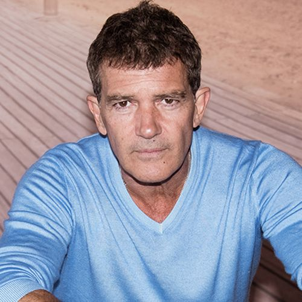

"Look at the world around you. It may seem like immovable,
implacable place. It is not. With the slightest push- in just the
right place-it can be tipped."
-Malcolm Gladwell, The Tipping Point.
-Malcolm Gladwell, The Tipping Point.
THE FOUNDERS

Cristian Aquino-Sterling, Ph.D.
Founder and Co-Director
Texas Tech University, U.S.A

Luisa Maria
Founder and Co-Director
Texas Tech University, U.S.A
Luisa Maria
Founder and Co-Director
Texas Tech University, U.S.A
Antoniota
Founder and Co-Director
Texas Tech University, U.S.A
VISION AND MISSION
At a time when bi-multilingual education continues to build momentum
as a field of research, practice, and advocacy worldwide, there is a
need for a concerted strategy to advance the field's systematic
internationalization. To this end, professors Cristian Aquino-Sterling
(Texas Tech University, USA), Antonieta Megale (Universidade Federal
de São Paulo, Brazil), and María Luisa Pérez Cañado (Universidad de
Jaén, Spain) have formed a transnational partnership to co-found and
co-direct the International and Comparative Bi-Multilingual Education
Research Group (ICBERG). ICBERG is an international community of
engaged scholar-practitioners dedicated to advancing bi-multilingual
education internationally. Through international and comparative
bi-multilingual education research, professional development, and
advocacy ICBERG is committed to serving as a driving force for
generating impactful innovations in the field at national and
transnational levels. ICBERG is aligned with United Nations'
Transforming our World: The 2030 Agenda for Sustainable Development
(Goal 4: Quality Education), and international priorities in higher
education.